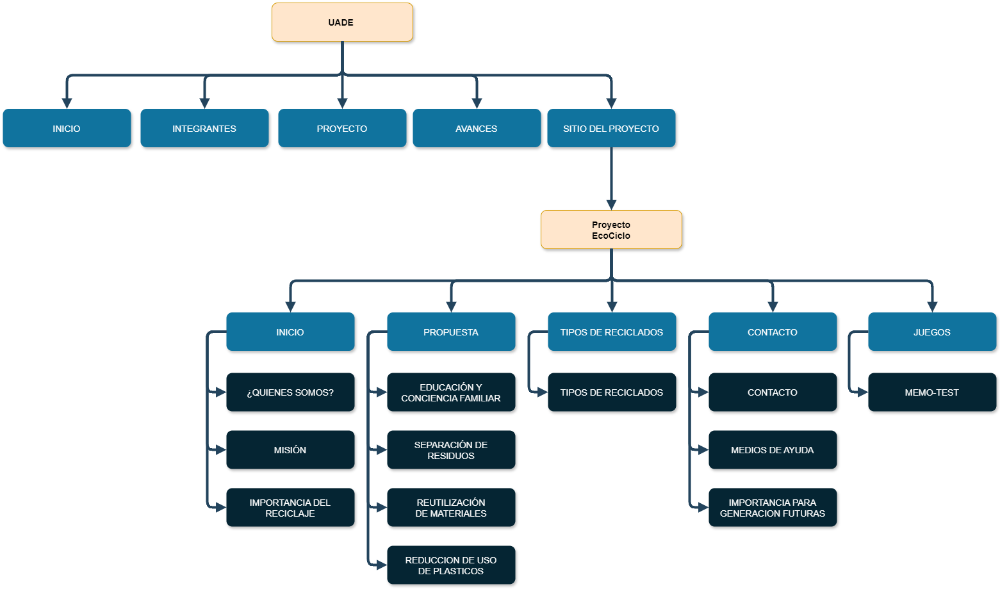

Nombre del sitio web
Proyecto ECO-CICLO
Eslogan
"Haga de la sostenibilidad un hábito."
Logo

Tipo de ONG
ONG de conservación ambiental
Público objetivo
Nuestra propuesta de una página web de sustentabilidad y reciclaje se dirige a estudiantes y jóvenes interesados en el medio ambiente,
educadores que buscan integrar la educación ambiental en sus currículos, familias que desean reducir su impacto ambiental en el hogar,
empresas que buscan implementar prácticas de responsabilidad social corporativa, gobiernos y ONGs que desarrollan políticas y programas
de sustentabilidad, y comunidades locales interesadas en mejorar la calidad de vida a través de la reducción de residuos y la conservación del medio ambiente.
Público objetivo
Con nuestra página web de sustentabilidad y reciclaje, buscamos transmitir una imagen de compromiso y liderazgo en la protección del
medio ambiente, ofreciendo educación y empoderamiento para todos. Reflejamos innovación y mejora continua en prácticas ecológicas,
promoviendo colaboración entre familias, empresas, gobiernos y ONGs para alcanzar metas de sostenibilidad, siempre con transparencia y honestidad para generar confianza y credibilidad.
Árbol del sitio

INICIO
Explicación sobre quienes somos, nuestra misión y La importancia del reciclaje para las generaciones futuras
Propuesta
Objetivos propuestos como ONG para incluir el reciclaje en nuestras vidas
Tipos de Reciclados
Se habla sobre separar adecuadamente los residuos para su reciclaje efectivo, y se menciona que existen varios tipos de reciclaje
Contacto
Formas de contactar a la ONG
Juego
Juego estilo memo-test para aprender sobre el reciclaje
Roles de los integrantes
Diseñador UX/UI:Lautaro Toiw, Tobias Diaz Cuellar, Maximo Pita y Francisco Fuhr
Maquetador:Lautaro Toiw y Tobias Diaz Cuellar
Programador: Lautaro Toiw, Tobias Diaz Cuellar, Maximo Pita y Francisco Fuhr
Comunicador Web: Lautaro Toiw y Tobias Diaz Cuellar